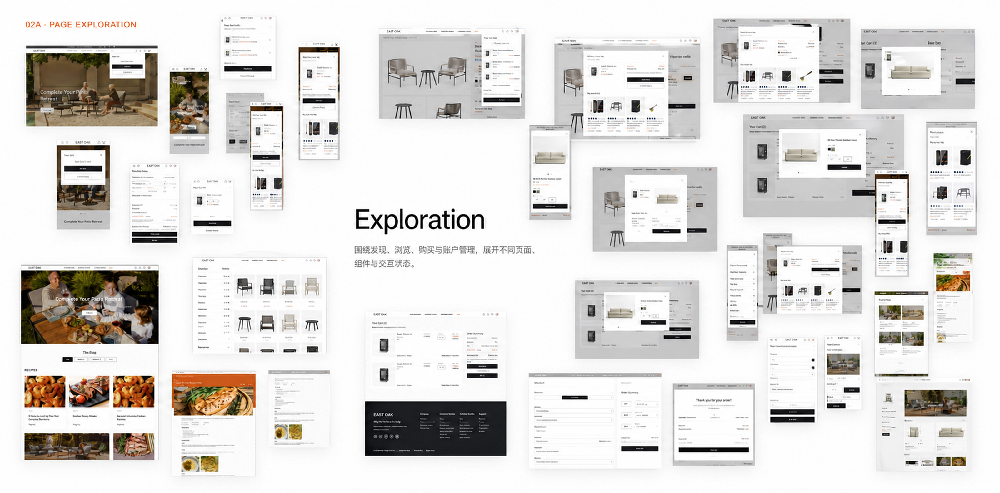
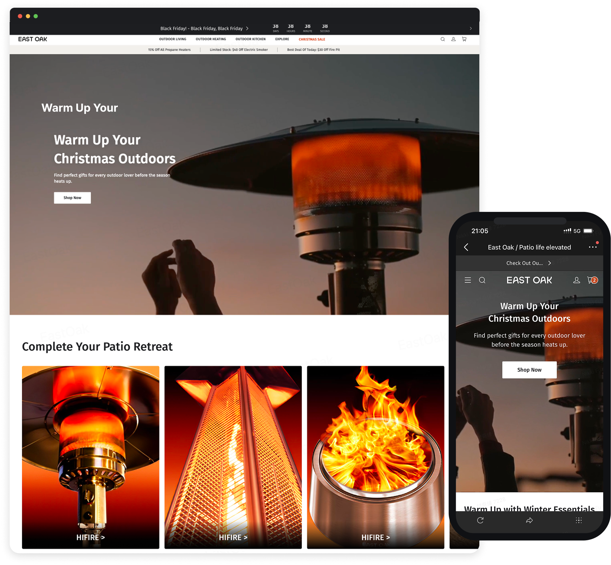
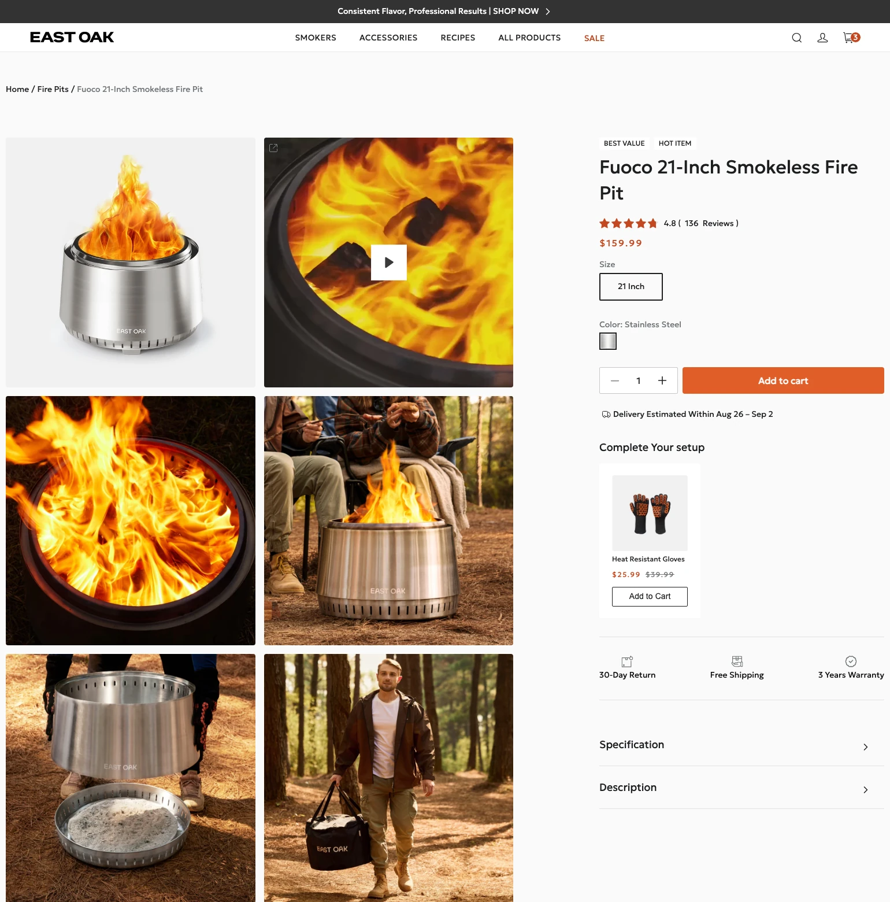
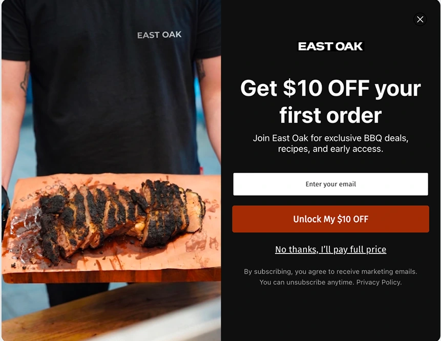
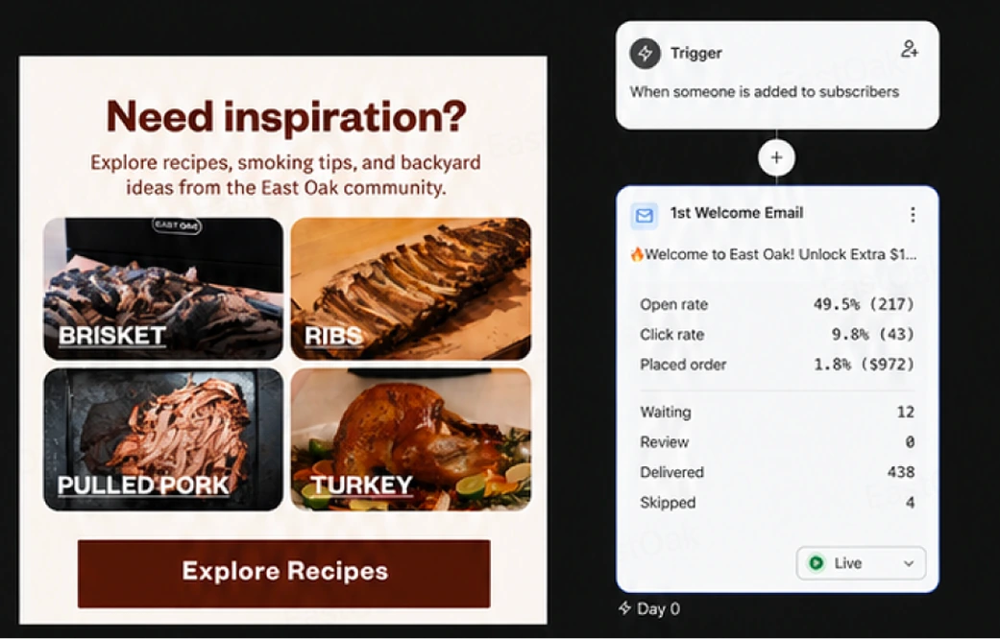
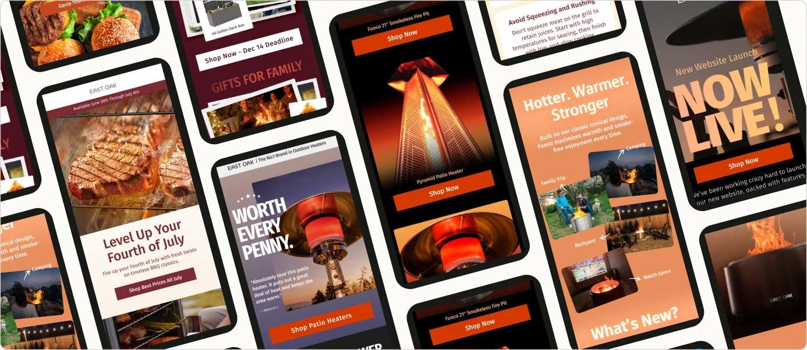

BEFORE
页面、内容与营销彼此割裂
每次新品和活动都重新设计；运营依赖临时交付，体验与品牌表达难以保持一致。
E-COMMERCE SYSTEM · 2024–2026
我重构核心购买路径，建立页面组件与内容规范，并用 EDM 承接用户生命周期，让设计不再依赖一次次重新交付。

PROJECT SNAPSHOT
[2024—2026]
ECOMMERCE · GROWTH SYSTEM
STRATEGY · CORE PROBLEM
BEFORE
每次新品和活动都重新设计；运营依赖临时交付，体验与品牌表达难以保持一致。
DESIGN RESPONSE
重构购买路径，建立可复用组件与内容模块，再让 EDM 成为网站之后的增长延伸。
STRATEGY · SYSTEM RESPONSE
01 · SYSTEM RESEARCH
盘点既有页面与上新需求，找出可以复用的内容模块和配置规则。
02 · CORE PAGES
基于前面的结构研究推进 Homepage 与 PDP，让用户更容易发现、理解并选择商品。
03 · LIFECYCLE GROWTH
通过 Campaign 与自动化 Flow 承接获取、转化、使用和复购关系。
02 · CORE PAGES
Homepage 建立商品发现路径，PDP 集中购买判断所需的信息，再按需提供产品证据与细节。
02A · PAGE EXPLORATION

02B · LIVE EXPERIENCE

重新组织主推内容、品类入口、场景模块与信任信息，让用户从品牌和活动自然进入商品浏览。
内容和活动频繁变化，用户需要稳定的浏览入口，运营也需要在不重做整页的情况下增减内容。

用户不需要先读完整个页面，就能完成关键判断；需要更多证据时，再沿左侧页面继续向下浏览。
将图片、价格、规格、变体和 CTA 集中在首屏，再把卖点、服务、配件与评价拆成不同内容模块。
用户可以先完成是否购买的判断，再按需查看性能与技术细节；不同产品类型也能复用同一套基本结构。
01 · SYSTEM RESEARCH
在开始 Homepage 与 PDP 设计前，我先盘点既有页面和上新需求，找出常用 Banner 的重复结构，再整理成内容插槽、展示控制、视觉层和响应式规则。
盘点上新与活动需求。
找出页面里的重复部分。
明确内容与配置方式。
同一组件适配不同场景。
减少重复设计和开发。
REUSABLE BANNER SYSTEM
运营只需要替换素材、文案和链接，再调整位置与蒙版，不需要每次重新设计整张页面。
100+
覆盖核心购买、内容和服务类型。
315
协同开发完成适配、状态和交互 QA。
REUSABLE
减少重复设计和开发等待。
03 · LIFECYCLE GROWTH
网站完成首次访问和邮箱获取后，自动化内容继续承接首次购买、产品教育和后续复购。
建立兴趣与首次触达。
Pop-up Form 提供 $10 优惠。
发送 Coupon，推动首次购买。
完成购买后进入顾客阶段。
教育、促销、新品与配件内容。

用户进入官网后看到 Pop-up Form，提交邮箱即可加入品牌的后续沟通。

自动发送优惠与内容入口，把一次订阅继续推进为阅读、点击和购买。

根据用户阶段安排教育、促销、新品与配件内容，让 EDM 成为持续运营的一部分。
04A · RESULTS
业务结果同时受到产品、价格、流量与跨职能运营影响；这里展示的是设计系统上线后的整体表现与交付规模。
04B · CONTRIBUTION & BOUNDARY
我负责把购买路径、设计组件和生命周期内容连接起来，并推动页面设计、跨团队协作与上线 QA；销售结果由产品、价格、流量、市场和运营共同产生。